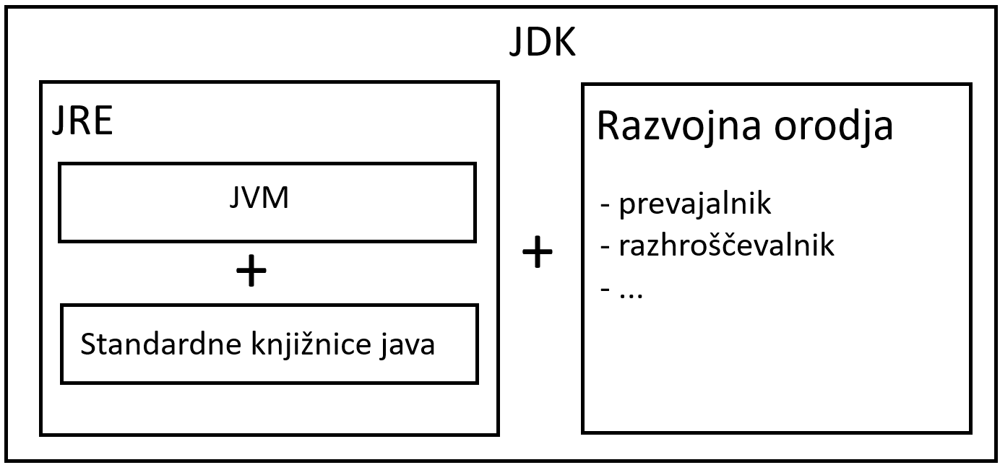
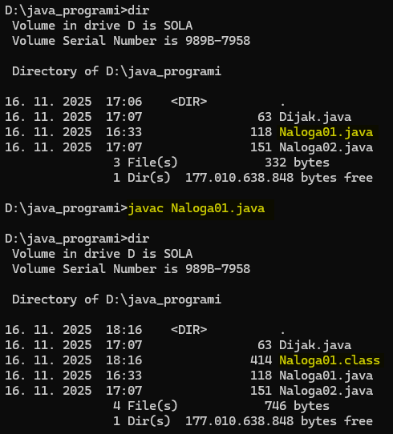
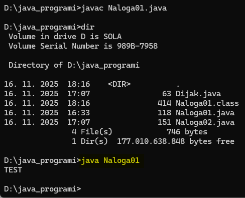
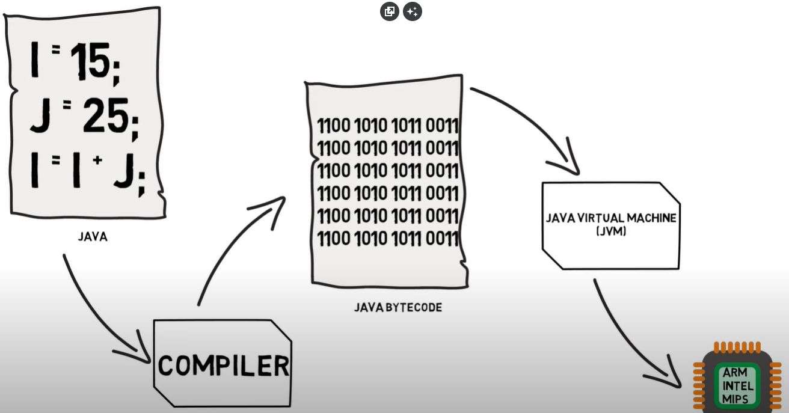
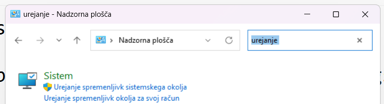
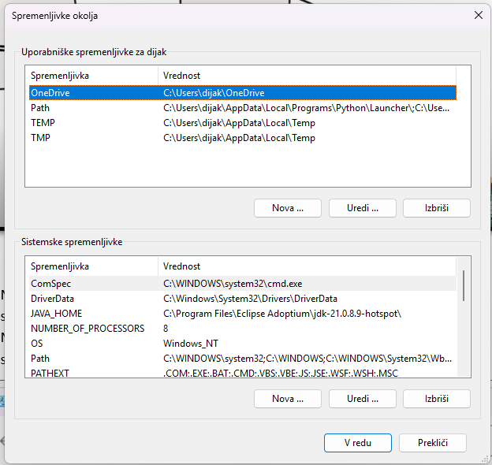

Programski jezik JAVA – programiranje v javi
Java je objektno usmerjen, splošnonamenski programski jezik. Izvorna koda se prevede v vmesno kodo, ki jo izvaja navidezni stroj Java (JVM). To omogoča izvajanje istega prevedenega programa na različnih platformah z ustreznim JVM, kar povzema načelo »piši enkrat, zaženi povsod«. Java se uporablja za razvoj spletnih in namiznih aplikacij, strežniških sistemov ter aplikacij za Android. Pri Androidu se koda izvaja v okolju Android Runtime (ART).
Značilnosti programskega jezika java:
Objektno usmerjen jezik (OOP – object orienting programming language) – NUJNO ZNATI
Vse v Javi je organizirano v razrede in objekte.
Podpira: dedovanje, polimorfizem, enkapsulacijo, abstrakcijo.
Prenosljivost (Write Once, Run Anywhere) – NUJNO ZNATI
Program se prevede v bytecode, ki teče na JVM.
Isti program lahko teče na Windows, Linux, macOS …
Statično tipiziran jezik
Tip spremenljivke je znan že med prevajanjem.
Manj napak in boljša optimizacija.
Varnost
JVM deluje kot zaščitna plast med programom in operacijskim sistemom.
Vgrajen varnostni model in upravljanje dovoljenj.
Samodejno upravljanje pomnilnika
Java ima garbage collector, ki samodejno odstrani neuporabljene objekte.
Programerju ni treba ročno sproščati pomnilnika.
Večnitnost (multithreading)
Java ima vgrajeno podporo za delo z več niti hkrati.
Omogoča hitrejše in paralelno izvajanje programov.
Velika standardna knjižnica (Java API)
Zelo obsežen nabor že pripravljenih razredov:
zbirke podatkov (Collections)
datoteke in I/O
mrežno programiranje
grafika, datumi, čas, varnost, …
Neodvisna od platforme - NUJNO ZNATI
Bytecode se izvaja na JVM, zato Java ni vezana na strojno opremo ali OS.
Zanesljivost in stabilnost
Strogo preverjanje kode med prevajanjem in med izvajanjem.
Manj verjetno sesuvanje programov.
Razširljivost in dobro podprto okolje
Velika skupnost, bogata dokumentacija, dolgoročna podpora.
Uporablja se v podjetjih, mobilnih napravah (Android), strežnikih, IoT …
Prvi program v javi
Naloga: Napiši program v programskem jeziku java, ki na zaslon izpiše tvoje ime in priimek. Opiši postopek priprave, pisanja, prevajanja in zagona in testiranja programa.
Primer pričakovanega izpisa:
| Jaka Krajnc |
|---|
Postopek reševanja:
Razumevanje naloge
Določimo, kaj mora program narediti. V našem primeru mora izpisati ime in priimek. Vhodnih podatkov ni.Načrtovanje rešitve – zapis algoritma
Postopek predstavimo z diagramom poteka, psevdokodo ali opisom v slovenščini: začetek → izpis imena in priimka → konec.Pisanje izvorne kode
Algoritem zapišemo v programskem jeziku Java in datoteko shranimo.Prevajanje programa
Izvorno kodo prevedemo v vmesno kodo. Če prevajalnik sporoči napake, jih odpravimo in program znova prevedemo.Zagon programa
Program zaženemo in opazujemo njegov izpis.Testiranje programa
Dejanski izpis primerjamo s pričakovanim. Preverimo, ali sta ime in priimek pravilno zapisana, v pravilnem vrstnem redu in ločena s presledkom.Odpravljanje napak in ponovno preverjanje
Če odkrijemo napake, popravimo kodo ali po potrebi načrt rešitve. Program nato znova prevedemo, zaženemo in testiramo.
Pisanje programa (programske kode)
Za pisanje programa (izvorne kode) uporabimo:
navaden urejevalnik besedila, kot je beležnica (Notepad)
napredni urejevalnik kot sta Notepad++ ali Visual Studio Code
integrirano razvojno orodje (ang. integrated development environment (IDE)) kot so IntelliJ IDEA, Eclipse, NetBeans.
Vsako od omenjenih ima prednosti in slabosti.
NOTEPAD (Beležnica – Windows)
Vrsta: Zelo osnovni urejevalnik besedil
Najbolj primeren za: hitre zapiske, branje log datotek,
preproste .txt in .ini datoteke
Osnovne lastnosti
Privzet program v Windows.
Brez dodatnih funkcij.
Deluje zelo hitro.
Prednosti
Minimalen in izjemno lahek.
Takoj se odpre, primeren za hitre popravke konfiguracij.
Brez navlake, ne potrebuje namestitve.
Slabosti
Brez barvanja kode (syntax highlighting).
Brez vtičnikov, brez naprednih funkcij.
Neprimeren za resno programiranje.
NOTEPAD++
Vrsta: Napredni urejevalnik besedil
Najbolj primeren za: spletne datoteke (HTML, CSS, PHP),
skripte, manjše projekte
Osnovne lastnosti
Odlično barvanje kode za več kot 70 jezikov.
Ogromno vtičnikov (FTP, regex, primerjanje datotek …)
Prilagodljiv vmesnik, multi-tab.
Prednosti
Izjemno lahek, hiter in prenosljiv (.zip verzija).
Podpira makre, regex, vtičnike.
Odličen za sysadmina, spletne razvijalce in urejanje konfiguracij.
Slabosti
Ni pravo razvojno okolje (IDE).
Nima integrirane pametne pomoči pri programiranju (intellisense).
Ni primeren za velike projekte (Java, C#, Kotlin …).
VISUAL STUDIO CODE (VS Code)
Vrsta: Lahko, modularno IDE (kodni urejevalnik z
zmogljivimi razširitvami)
Najbolj primeren za: web razvoj, Python, Node.js, C#,
C++, Java (z razširitvami)
Osnovne lastnosti
Izjemno razširljiv (tisoče extensionov).
IntelliSense podpora (predlogi, dokumentacija).
Git integracija, terminal, debugger.
Prednosti
Najbolj priljubljen urejevalnik na svetu.
Deluje hitro, a omogoča IDE funkcije.
Odličen za začetnike in napredne uporabnike.
Podpora praktično za vse jezike.
Slabosti
Za Java, C++ in večje projekte potrebuje več nastavitev.
Extensioni lahko upočasnijo delovanje.
Ni tako “globoko” IDE kot IntelliJ IDEA ali Eclipse.
NETBEANS
Vrsta: Polno IDE
Najbolj primeren za: Java, PHP, C/C++; šole (zaradi
enostavnosti)
Osnovne lastnosti
Vgrajena podpora za Java SE, Java EE.
Enostavna namestitev in uporaba.
Vgrajen GUI designer (Swing, JavaFX).
Prednosti
Dober za začetnike (čist in predvidljiv).
Enostavna podpora za Maven in Gradle.
“All-in-one”, ni treba dodajati vtičnikov.
Slabosti
Počasnejši od VS Code in IntelliJ IDEA.
Manj vtičnikov kot Eclipse.
Nekoliko zastarel občutek.
ECLIPSE
Vrsta: Zelo zmogljivo, modularno IDE
Najbolj primeren za: Java, enterprise projekte, razvoj
v podjetjih
Osnovne lastnosti
Bogata podpora za Java, C/C++, Python, Android (prej), web orodja.
Možnost ogromne razširitve z vtičniki.
Globoka integracija z enterprise orodji (Maven, Jenkins, SVN …).
Prednosti
Odličen za velike in kompleksne projekte.
Stabilno, profesionalno okolje.
Ogromno vtičnikov.
Slabosti
Težek, počasnejši start.
Pogosti konflikti med vtičniki.
Manj prijazen začetnikom.
INTELLIJ IDEA (Community ali Ultimate)
Vrsta: Premium IDE
Najbolj primeren za: Java, Kotlin, Android, Spring,
velike projekte
Osnovne lastnosti
Najbolj inteligentna pomoč pri programiranju (smart completion).
Vgrajeni sistemi za refaktoring, testiranje, gradnjo (Gradle, Maven).
Ultimate verzija ima še: Spring, React, SQL, Python, Docker …
Prednosti
Najboljše Java/Kotlin IDE na trgu.
Uporabniku prijazen, pregleden.
Odličen za akademske in profesionalne projekte.
Veliko avtomatizacije: code suggestions, refactoring …
Slabosti
Težji program, potrebuje več RAM-a.
Ultimate je plačljiv.
Za zelo stare računalnike ni idealen.
Primerjalna tabela
| Orodje | Tip | Hitrost | Najboljše za | Slabosti |
|---|---|---|---|---|
| Notepad | osn. urejevalnik | ⭐⭐⭐⭐ | hitre zapiske | nič za programiranje |
| Notepad++ | nap. urejevalnik | ⭐⭐⭐⭐ | skripte, HTML, PHP | brez prave IDE logike |
| VS Code | hibrid IDE | ⭐⭐⭐ | web, Python, JS | zahteva nastavitve |
| NetBeans | IDE | ⭐⭐ | Java, šole | počasnejši, manj moderen |
| Eclipse | IDE | ⭐ | velike projekte | lahko kompliciran |
| IntelliJ IDEA | premium IDE | ⭐⭐⭐ | Java/Kotlin, profesionalno | težek, Ultimate plačljiv |
Kateri je »najboljši« glede na opis?
Za dijake → VS Code ali NetBeans
Za profesionalni Java razvoj → IntelliJ IDEA
Za C++ ali enterprise Java → Eclipse
Za hitre urejevalske naloge → Notepad++
Za konfiguracijske datoteke → preprosto Notepad
Vir: ChatGPT
Kateri je »najboljši« glede na raziskavo na Stack Overflow (2023)?
Visual Studio Code (VS Code) je uporabljalo ≈ 73,7 % vseh razvijalcev
IntelliJ IDEA je bilo uporabljeno pri ≈ 26,8 % vseh razvijalcev
Eclipse je bil uporabljen pri ≈ 9,9 % vseh razvijalcev.
Prevajanje programa
Da lahko program zaženemo, ga moramo pred tem prevesti (compile). Rezultat prevajanja je vmesna koda (bytecode).
Prevajalnik za programsko kodo je del paketa JDK (java developement kit).

JDK (Java Development Kit) je celoten paket, ki ga potrebujemo za razvoj programov java. Sestavljen je iz več delov. Nekateri so namenjeni za izvajanje, drugi za pisanje in prevajanje programov.
JDK namestimo tako, da na spletu najdemo in prenesemo eno izmed različic:
OpenJDK (odprtokodna različica – brezplačana tudi za komercialno delo)
Oracle JDK (brezplačna, vendar plačljiva za komercialno uporabo.
katero drugo
Nato program namestimo:


Za prevajanje izvorne kode (source code) uporabimo prevajalnik javac. V ukazni vrstici se pomaknemo v mapo z izvorno datoteko in vpišemo ukaz:
javac ime_programa.java primer: javac Naloga.java |
|---|
Če prevajanje uspe, nastane ena ali več datotek s končnico .class, ki vsebujejo vmesno kodo (ang. bytecode). Pri preprostem programu z razredom Naloga nastane datoteka Naloga.class.
Vmesna koda je neodvisna od platforme. Isti prevedeni program lahko zato brez ponovnega prevajanja izvajamo v različnih operacijskih sistemih, na primer Windows, Linux in macOS, če imajo nameščen ustrezen JVM in program ne uporablja knjižnic ali funkcij, vezanih na določeno platformo.

Za radovedne: Zakaj Java uporablja vmesno kodo (bytecode)?
|
|---|
Zagon programa
Vmesna koda (bytecode) je univerzalni strojni jezik programov java, ki ga izvaja JVM (java virtual machine) namesto tvojega fizičnega procesorja (CPU). JVM je del JDK paketa in se namesti avtomatsko ob namestitvi JDK. Namen je, da so programi neodvisni od platforme (Win, Linux, Mac).

Program zaženemo z ukazom java. Končnice .class ne napišemo:
java ime_programa Primer: java Naloga.java |
|---|


Pri nameščanju omenjene programske opreme (JDK) moramo izbrati različico, ki ustreza našemu operacijskemu sistemu (npr. Windows, Linux ali macOS), saj vsaka platforma zahteva svojo prilagojeno izvedbo.
Za radovedne Naloge JVM
Kako JVM izvaja program? JVM ima dva mehanizma za izvedbo bytecode-a: Tolmačenje (interpreting)
JIT – Just-In-Time prevajanje
|
|---|
Postopek nameščanja in nastavitve poti (PATH)
Namesti java prevajalnik in zaganjalnik (paket Java JDK) za Windows – prenesi iz spletne strani Oracle. Prenesi 64 bitno različico msi.
Iz poti izbriši vse vnose JDK!
Nastavi PATH – pot do java prevajalnika. Pot nastaviš nadzorna plošča/urejanje spremenljivk okolja za svoj račun/path.


Odpreš command line (ukazni poziv). Prestaviš se v svojo mapo z vajami. (d:\RAC\VAJA01).
Ustvariš novo datoteko naloga01.java. (notepad naloga01.java)
Napiši prvi program v javi
Prevedi program: javac ime_programa.java. Ustvari se datoteka class. To je vmesna koda.
Zaženi program: java ime_programa.
Kaj potrebujemo:
Urejevalnik besedila (program)
Prevajalnik za javo (program)
Zaganjalnik (program)
Napisali prvi program – tekstovna datoteka. Uporabili bomo navadni urejevalnik besedila. Program bo napisan v PJ java.
|
|---|
Postopek za VS code
|
|---|